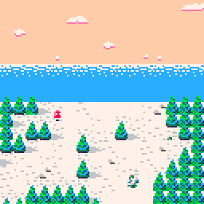
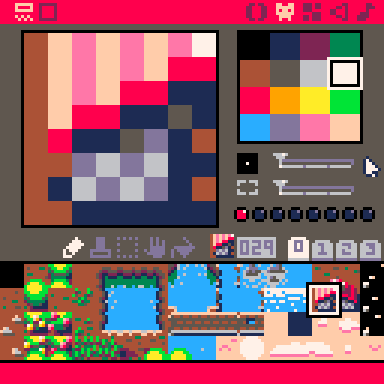
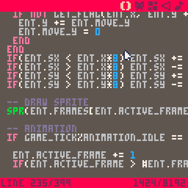
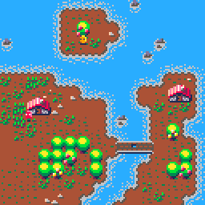
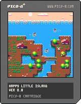
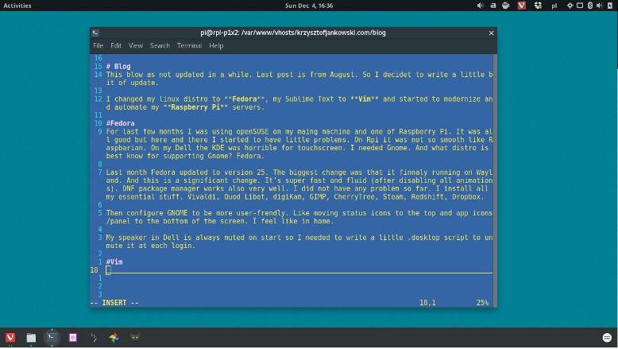
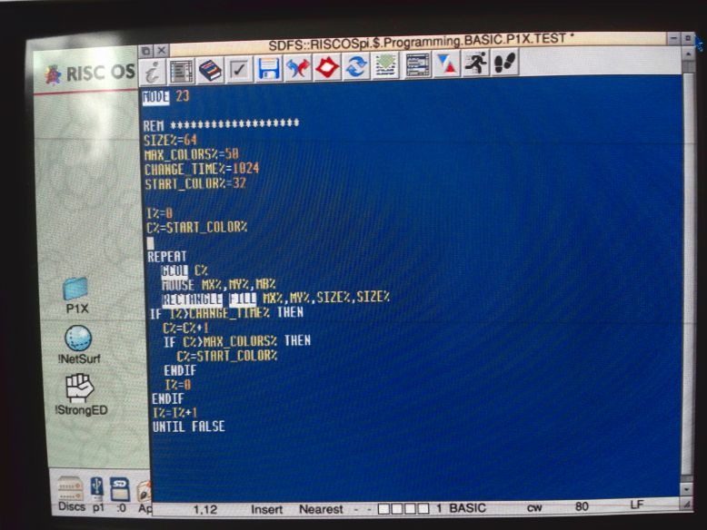
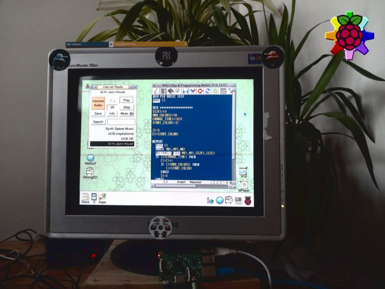

(What I Love in) Pico-8 Fantasy Console
Introduction
Pico-8 is a new player in the game engines war. But instead of fighting for better graphics than UE4 or for having more plugins than Unity it's just a simple, cute and nostalgic game creation environment.
Its simplicity and integrated tools are the most distinctive strengths. This will not be the full review nor tutorial. I'll just highlight the best parts of it after some time of use.
Restrictions

Pico-8 have strict restrictions like 8x8 sprites, 32KB cartridge size for code, gfx, sfx and maps. Only one, 128x128 screen resolution and simplified LUA code base. But thanks to this it's super easy to make game and final binary will run on almost any computer including Raspberry Pi Zero!
The code reminds me of BASIC from 8bit computers. And brings memories from my childhood when I did my first programming on 486 PC. Looking at today's trends people like this approach.
Complete Toolkit
Pico-8 is a complete package: code editor (and compiler), pixel art editor, map editor, sampler and music composer. All of this for only $15. Yes, it's not free. But good things costs. And considering that you will be able to create a full game using one application it's a small price. I don't know of any other game engine that have that ability.
True Pixel Art Heaven

Graphics in Pico-8 are inspired by 8-bit era (hence the name). Screen size is always 128x128 and sprites are based on 8x8 grid. Also there are only 16 colors to choose from.
For me this is a perfect setup as I always use 16 or 32 palette for my art. I normally make sprites 16x16 (or more) but I did a lot of art in 8x8 in the past. And restricting size and palette is good for practicing. It force you to re-think and come up with all the tricks to make the sprite recognizable while good looking.
In daily developing I'm using Aseprite as my go to graphics editor. Pico-8 have own, build-in editor. I's not that powerful but still much better than most of the competition. It's simple but have all the tools needed for pixel art.
Good Manual and BASIC Like Language

One of the fundamental things about game engines are manual. Without it it's unnecessary harder to develop. I'm looking at you - Godot Engine. But on the other hand when manual is too big and too complicated it scares junior developers.
Pico-8 manual thanks to it's simple language is short and straightforward. Covers all functions and engine capabilities. It's a very good base at learning new language.
Language itself is highly BASIC inspired but uses LUA simplified syntax. It's changed mostly to fit small screen estate of the (built-in) editor. Also it have all the functions to do graphics and music things. Putting a pixel or a sprite ona screen is as easy and pleasing as in BASIC.
Why I love BASIC languages? Because right after I open the environment I can write few lines of code and have something on the screen. Doing this, drawing pixel art sprites, on modern engines is harder than it should and requires lot of configuring. It's not just "put a sprite on x and y. I need to import sprite (from external editor), make some node with sprite object, configure it to show me that file. Then configure engine to have proper resolution and not blurring the sprites. And all this uses so much processing power as under the hood there's still sophisticated engine. For 8-bit kind of games it's over-engineering. That's why Pico-8 wins in this scenario. It looses badly if you want to make anything 3D or vector. But that's why we have special tools for special needs.
Pico-8 is perfect for simple, pixel art games (and programs). Also small games are easier to do and maintain. And finish ;)
Exporting and Sharing
Exporting finished game and sharing the process of it's creation from the Pico-8 is a dream. It has everything I ever wanted to have in a game engine.

I can make screenshots in on simple click. I can make game cover in another. But that's nothing special. But then it goes to 11. I can make GIFs very simple. This one feature is so useful and unseen in any other engine. Normally making GIFs from game is unnecessary complicated process involving few applications and few rendering times. In Pico-8 I just set a starting mark and then end it with a hotkey. After that immediately I have a pixel perfect GIF to share. Brilliantly simple and useful. Why no other tool have that? It's one of those little details that makes big differences.
Another cool thing is extremely simple exporting to JavaScript/web. One command and I have two files ready to be pushed to the server. And from my testing it works on every OS, browser and device I tested. I know it's only a 32KB simple programs but still - export to HTML5 works as a charm and that's a good thing. I know engines that still have trouble with this (Godot) or requires a stupid plugin (Unity).

And the last but most awesome thing is exporting the cartridge (Pico-8 game) as a PNG file! Yes. The files are so small that they can be embedded into the PNG file itself. So the file is a .png that opens as a image of a cover with description. But when opened in Pico-8 they works as a proper cartridge - runs an embedded game (The image above this paragraph is an actual cartridge you can run). It's so brilliantly cool :)
As a bonus, the Pico-8 cartridges (.p8 not .png) are git friendly. Basically any text editor friendly. They are just a plain text divided by the code, graphics, map and music. Once again simple and easy to maintain.
Publishing
The Pico-8 have build in game browser - just like App Store in iOS devices. Anyone can publish and all those games are open-source. So anyone can look at the code, learn from it and modify for fun and experiment. This feature is always advertising as a key thing.
For me it's just a nice thing to have as I don't use it often. But that doesn't mean it's not needed. Anyone less skilled will appreciate it. And whatever people will use it or not it teaches developers that open-source is a good and needed thing.
Raspberry Pi Zero Console

Last thing I want to mention is that Pico-8 runs on Raspberry Pi. Also the Pi Zero. And community made a special distribution (super small) that change the Pi to the little console. It boots directly to the Pico-8 (in a few seconds!) and supports Xbox controllers out of the box.
Full setup contains Pi Zero + XBox retriever and whole thing connected to the monitor. And that's it. Power up and I have a Pico-8 console ready to play. I will provide this on each trade shows we (P1X Team) show up from now on. And we usually do 2-3 in a year. The closest one will be in April (Pyrkon).
I just mention this because it's impossible to do this kind of (cheap) console for Godot, Unity or Unreal Engine. Another small win for Pico-8.
Sound

This fantasy console have a fully featured sequencer and synthesizer for chip tunes. But I'm not a musician and can't compare nor review it properly. I can make sample sound effects for my games and that's great. In the past I use mostly xsfr and this is kind of similar. And once again - it's build in so no external tools are needed.
Conclusion
It seems like the Pico-8 is the best game engine out there. No it's not. But it's one of the most solid ones. And for 8bit games with pixel art graphics (and chip tune sound) it's the one that will just work.
I just love to make some small experiments/prototypes in Pico-8 in the free time. It's so simple and just works as intended.
I can easily share GIFs to the awesome twitter community. When I finish my first completed game I will publish it to the Pico-8 console itself so any one can play. I already test this feature for the Work In Progress category and it was easy and fast.
Graphics restrictions pushes my pixel art skill to the limit and beyond. I learn a lot trying to fit my vision in those few pixels and code limitations.
For anyone that wants to make first steps in game development or veterans that want something small and simple to play in the evenings I highly recommend Pico-8.
Tags: pixel-art, pico-8, game-development, raspberry-pi
Fedora 25, Learning Vim and maintaining Raspberry Pi Servers

Blog
This blog was as not updated in a while. Last post is from August. So I decided to write a little bit of update.
I changed my linux distro to Fedora, my Sublime Text to Vim and started to modernize and automate my Raspberry Pi servers.
Fedora
For last few months I was using openSUSE on my maing machine and one of Raspberry Pi. It was all good but here and there I started to have little problems. On Rpi it was not so smooth like Raspbarian. On my Dell the KDE was horrible for touchscreen. I needed Gnome. And what distro is best know for supporting Gnome? Fedora.
Last month Fedora updated to version 25. The biggest change was that it finnaly running on Wayland. And this is a significant change. It's super fast and fluid (after disabling all animations). DNF package manager works also very well. I did not have any problem so far. I install all my essential stuff. Vivaldi, Quod Libet, digiKam, GIMP, CherryTree, Steam, Redshift, Dropbox.
Then configure GNOME to be more user-frendly. Like moving status icons to the top and app icons/panel to the bottom of the screen. I feel like in home.
My speaker in Dell is always muted on start so I needed to write a little .desktop script to unmute it at each login.
Vim
Oh Vim. I learn how to quit years ago. I even know how to switch to edit mode and get back. And that was my whole knowleage over the years. And week ago I decided that it's time to change this.
I bought a little pocket book with all the sortcuts. I wached few essential videos on YouTube. And then I started to read vimtutor. And after few days I get hooked.

Vim is perfect. I still can not use it in work with our huge project but at home I don't even have Sublime installed. And I do not want to anymore. I can do all the cool things in Vim. Some times it's hard but because I don't know how not because of Vim.
I have Vortex Pok3r keybard that is a perfect companion with Vim. I has [ESC] quite easy to reach and - the best part - it has arrows as IJKL. Almost like Vim but in normal position (triangle). So I do not need to force myself to learn HJKL. I tried and kinda can use it but why if I have the better option?
I always loved distraction free editors mode. In Vim it's always distraction free :) Also I use Vim to code my little Python aplications and this blog!
There is a long road to go before I become a fluid Vim user. But I like to learn and be more and more productive thanks to it.
It will be a fun time.
Raspberry Pi Servers

My little server grows. From one Pi that serves everything to three units. It's still not perfect but for now it looks like this:
- main Pi (the one in the jar) for all P1X websites and reverese proxy to another Pi
- secondary Pi that is a clone of the main Pi just for redundancy
- third one for that serves proxy domain
I have 3 commercial websites and one Pi with domain that are my collegue. I rented him (for free) space, power and fast internet connection. It becomes serious.
I have one more Pi but I don't have any free ethernet ports in router nor power adapters for it. That's why I bought switch (8 ports) and nice powered USB hub (8 ports) along with 2.2A usb cables. They shoudl get to me sometime next week.
I need to write some scripts to automaticly synchronize /www/ between those two main and backup Raspberry Pi's. And then decide what to do with the last one that for now is waiting for power. It's the latest Pi 3B. It has 4 cores. What can I do to use them?
Tags: vim, linux, raspberry-pi
Fun With BASIC on RISC OS Pi
I put latest beta build of RISC OS Pi into my Raspberry Pi B. And then the BBC BASIC fun begins!

RISC OS Pi
You may wander, "What is RISC OS?".
It's an Operating System that has it's roots in the beginning of Personal Computers. But that can be sad about all OSes. What is most important is that RISC OS was made exclusively for RISC processor - ARM. Exactly the same processor that runs Raspberry Pi's. This gives RISC OS one of the biggest advantages: it's fast and super light. It's the smoothest OS available for RPi right now.
Disclaimer. I'm thinking of a computer as a box that can do the basic, primary things like word processing, spreadsheets, graphics and audio manipulation. The javascript-heavy social media sites are not in that list.

RISC OS Pi is a latest version of the RISC OS Open (5.23) that is dedicated to run on Raspberry Pi hardware. I tested only on model B+. The version 3 is not yet supported but according to developers work on it is almost done.
Yes, the OS is still in development. The community is alive. There are even annual events in UK! I hope I can attend one of those in the future.
Overall the OS looks very familiar. It has "dock" and "windows" and "desktop". All named differently here but basically it's how it all started. everything is drag-and-drop friendly. Sometimes to this point that it looks silly in our times. But it's all consistent and easy to understand.
Similarities
Programs are just icons with a disclaimer in the name. !Draw, !Paint, !Write.

To install an app is to put it in some directory. Looks very familiar to all macOS/iOS users.
Web
The biggest drawback is lack of modern web browser. Default !NetSurf browser is fast but not user friendly. And it do not support JavaScript nor latest CSS.
In other hands we have modern browsers on Raspberry Pi and once you enable all the latest features they all starts to work very slow. So at last !NetSurf works fast all the time just not rendering all those hipster pages correctly. But most of the time you get the information but with bad rendered background or broken layout.

Searching Wikipedia works perfect.
Media
I was able to play mp3 files and stream Digitally Imported radio with no trouble. Videos was clearly not accelerated and can't handle even low resolution. Back in the day there were no DivX nor HD :)
Applications
RISC OS Pi comes with some basic programs. But to get all of it you need more. And to get apps there are two sources: !PackMan and !Store. One for free and one for more commercial stuff.
Overall
Looking at pros like speed, productivity, simplicity and cons like unable to play YouTube videos I think RISC OS Pi is a big win here.
Comparing to the Ubuntu, Fedora, Pidora, DietPi, Raspbian... They all feels sluggish and unfinished. RISC OS feels mature, stable and consistent. For word processing, Wikipedia, calculations, music, fun with programming - it is superb.
For such a small and cheap thing like Raspberry Pi it's marvelous.
BBC BASIC
I'm a game developer. I love to code games. I started long, long time ago on Microsoft QBASIC in DOS. I made my first games then. And now, almost 20 years later I can back to the good-old-days. Sit behind a glowing CRT and just enjoy making simple experiments. BASIC is simple but has build in all the stuff game developer needs.

First thing I always make in BASIC is drawing colorful boxes using mouse. I dont know why but this is oddly satisfying to test :)

God, how fast this BBC BASIC is running on RISC OS Pi. The default editor isn't perfect but the executed code runs smoothly and without any hassle.
The Long-term Idea
I want to create a simple game that I can port thru different platforms/OSes. And for first platform I choose RISC OS Pi / BBC BASIC. It will be fun!
The game will be abstract, short, easy to start. With easy adding of second player (for Arcade). An there will be a leaderboard.
Conclusion
This is one of the best use of Raspberry Pi I experience so far.

Pure enjoinment for a geek like me and a lot of fun for a game developer like me. The ideal platform for long, fall evenings.
As a bonus I learned a lot about Arcon, BBC computers, the OS itself.
Tags: raspberry-pi, risc-os, basic
100 days of Raspberry Pi server
Our main web server - the Raspberry Pi B - celebrates 100 days of constant running! It serves much longer but after adding real UPS to it I never restarted it since. And today during maintanance work on I type 'uptime' just for curiosity.

Yes, Raspberry Pi @raspbarian is very, very stable. It serves only few PHP/HTML light pages. But still it's impressive to see this little computer doing it's job well done. All without any hassle.
To celebrate this event I did the full backup! Guess when was the last time I did one ;) But it was not an ordinary backup - I did an image of the entire SD card on-the-fly. Image was writing to the external SD card of another Raspberry Pi.. and in the end pushed to the Dropbox. I read this article about this method. It runs flawlessly.
Tags: raspberry-pi, server, linux